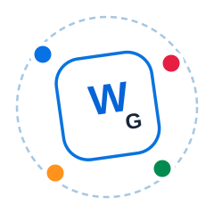

WAJOMEA.GROUP

Aprendemos, creamos y compartimos.
La puerta de entrada a nuestra área académica y a nuestros proyectos de conocimiento y creatividad.
¿A dónde quieres ingresar?
La puerta principal de WAJOMEA.GROUP. Ingresa con tu cuenta para acceder a BADBEAR.MED, calificaciones, biblioteca, otros proyectos y tu perfil.
Ingresar al Campus Explorar más proyectosConoce qué es cada proyecto de WAJOMEA.GROUP. El contenido completo se abre únicamente desde BADBEAR.CAMPUS.
Ver proyectosProyectos WAJOMEA.GROUP
 FORMACIÓN MÉDICA
FORMACIÓN MÉDICA
BADBEAR.MED
Ver definición
BADBEAR.MED es el espacio médico-académico de WAJOMEA.GROUP, donde organizamos cursos, especialidades, materiales de estudio y recursos clínicos.
Para estudiar y acceder a su contenido, ingresa con tu cuenta en BADBEAR.CAMPUS y selecciona BADBEAR.MED.
Ingresar por BADBEAR.CAMPUS
MÚSICA ORIGINAL
BADBEAR.MUSIC
Ver definición
BADBEAR.MUSIC es el compendio y álbum musical de WAJOMEA.GROUP: canciones, composiciones y producciones creadas por nuestro equipo.
Para escuchar el catálogo completo, ingresa con tu cuenta en BADBEAR.CAMPUS y abre Más proyectos → BADBEAR.MUSIC.
Ingresar por BADBEAR.CAMPUS
PUBLICACIONES DEL EQUIPO
BADBEAR.BOOKS
Ver definición
BADBEAR.BOOKS reúne libros, textos y publicaciones desarrolladas por WAJOMEA.GROUP para compartir conocimiento, historias e ideas con nuestra propia voz.
Para consultar las publicaciones disponibles, ingresa por BADBEAR.CAMPUS y abre Más proyectos → BADBEAR.BOOKS.
Ingresar por BADBEAR.CAMPUS
INGENIERÍA Y PROGRAMACIÓN
BADBEAR.LAB
Ver definición
BADBEAR.LAB es el laboratorio de ingeniería, programación y herramientas digitales de WAJOMEA.GROUP, creado para convertir ideas en soluciones.
Para utilizar sus herramientas y proyectos, ingresa por BADBEAR.CAMPUS y abre Más proyectos → BADBEAR.LAB.
Ingresar por BADBEAR.CAMPUS
MATEMÁTICA SUPERIOR
BADBEAR.MATH
Ver definición
BADBEAR.MATH es el espacio de matemática de WAJOMEA.GROUP, con conceptos, ejemplos resueltos y práctica organizada paso a paso.
Para acceder al contenido completo, ingresa por BADBEAR.CAMPUS y abre Más proyectos → BADBEAR.MATH.
Ingresar por BADBEAR.CAMPUS
BIBLIOTECA DE EXÁMENES
BADBEAR.EXAMS
Ver definición
BADBEAR.EXAMS es el archivo académico de evaluaciones y bancos de preguntas de WAJOMEA.GROUP, organizado por curso, año y tipo de examen.
Para consultar los archivos disponibles, ingresa por BADBEAR.CAMPUS y abre Más proyectos → BADBEAR.EXAMS.
Ingresar por BADBEAR.CAMPUS
CIENCIA Y DESCUBRIMIENTOS
Curiosidades científicas
Ver definición
Curiosidades científicas explora preguntas, fenómenos y descubrimientos mediante explicaciones claras y recursos creados por WAJOMEA.GROUP.
Para explorar su contenido, ingresa por BADBEAR.CAMPUS y abre Más proyectos → Curiosidades científicas.
Ingresar por BADBEAR.CAMPUSLo que creamos lleva nuestra firma.
WAJOMEA.GROUP reúne nuestros proyectos de aprendizaje y creación. Seguimos trabajando para ofrecerte material completo y nuevas propuestas, cuidando cada publicación.
Los nuevos proyectos se presentarán aquí conforme estén listos para compartir contigo.